Diseñadora gráfica enfocada en diseño visual, ilustración y motion graphics. Creo visuales digitales audaces y reflexivos que combinan concepto, oficio y narrativa en distintas plataformas.
Diseño de Marca ·Identidad Visual ·Motion Graphics ·Ilustración ·Diseño Editorial ·Diseño UI ·Dirección de Arte ·Redes Sociales ·Diseño Web ·Diseño de Marca ·Identidad Visual ·Motion Graphics ·Ilustración ·Diseño Editorial ·Diseño UI ·Dirección de Arte ·Redes Sociales ·Diseño Web ·
Galería
El diseño en acción
Selección de trabajos
Un vistazo a mis proyectos
Proyectos de diseño gráfico, identidad visual y diseño editorial que muestran mi proceso creativo.
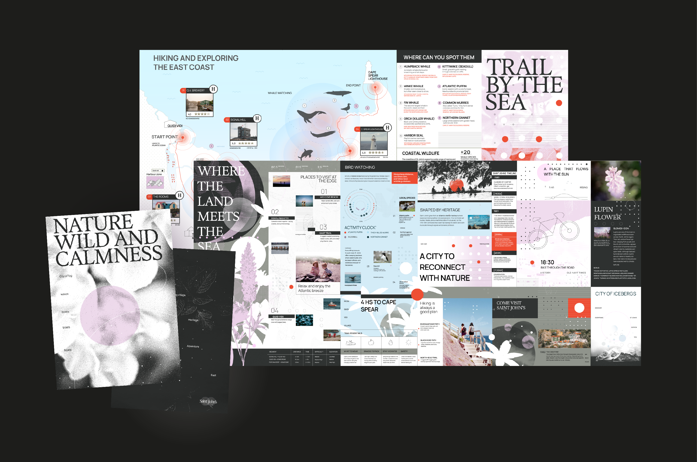
Identidad de Ciudad
Saint John's
Sistema de identidad institucional para la ciudad de Saint John's, Canadá: un lenguaje visual contemporáneo inspirado en su horizonte, la niebla y el océano Atlántico, aplicado a piezas editoriales, campañas turísticas, señalética y comunicación urbana.
Proyecto Universitario
La luz incidente
Proyecto académico basado en el análisis del cine argentino como referente cultural y visual. Exploración de cómo el cine refleja identidad, historia y perspectivas artísticas locales, traducidas en un afiche cinematográfico contemporáneo.
Diseño de Marca
Festival Nutra
Identidad visual completa para un festival gastronómico centrado en la nutrición y el bienestar. Diseño de sistema gráfico unificado con énfasis en la comunicación clara y el impacto visual.
Diseño de Marca
Festival Lenta
Sistema visual cohesivo para un festival de slow food que explora la alimentación consciente, la sustentabilidad y las prácticas gastronómicas tradicionales. Incluye afiches, entradas, merchandising y pieza editorial.
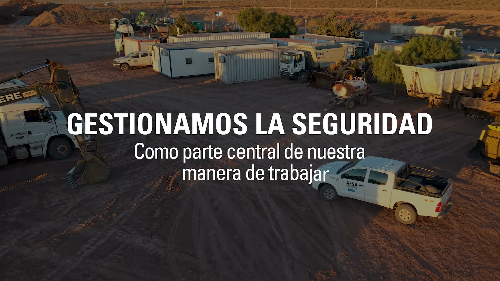
Motion & Video
Video AESA
Pieza audiovisual para el stand de AESA en una exposición. Conceptualización, edición y animación con un lenguaje visual dinámico para captar la atención y reforzar la presencia de la marca.
Especialidades
Lo que traigo a la mesa
Experiencias digitales que capturan la atención de los usuarios y ayudan a tu proyecto a destacarse desde el primer día.
Diseño para Redes SocialesBrandingDiseño VisualDiseño de Interfaz de UsuarioDiseño Web VisualIlustraciónDirección de Arte (Junior)Motion GraphicsDiseño Editorial
Detrás del lienzo
Quién soy
Soy Diseñadora Gráfica de Buenos Aires, Argentina, actualmente cursando la carrera de Diseño Gráfico en la Universidad de Buenos Aires. Ayudo a marcas y proyectos a convertir ideas en soluciones visuales claras y funcionales.
Desde identidad visual y diseño gráfico hasta contenido digital y multimedia, me enfoco en la comunicación y la resolución de problemas, no solo en hacer que las cosas se vean bonitas.
Trabajo con estructura, intención y atención al detalle, apuntando a diseños que tengan un propósito real y funcionen en el mundo real. Me adapto a distintos estilos y necesidades, priorizando siempre la claridad, la consistencia y los resultados.
Cuando no estoy diseñando, me inspiro observando, investigando y aprendiendo cosas nuevas. Me encanta tocar el ukelele y probar recetas nuevas en casa. Mi plato favorito es el sushi y adoro visitar montañas siempre que puedo.
Creo que el gran diseño viene de la precisión, la consistencia y una ejecución sólida: equilibrar velocidad y calidad para entregar resultados confiables a escala.
Comienzo con una fase de investigación y comprensión del brief, luego paso a exploración conceptual y bocetos. Después desarrollo propuestas visuales, las refino según el feedback y entrego los archivos finales listos para usar.
Depende del alcance y la complejidad. Un proyecto de identidad visual puede llevar 2–4 semanas; un proyecto editorial más extenso, entre 4 y 8 semanas. Siempre trabajo con plazos claros acordados desde el inicio.
Mi especialidad es el diseño gráfico y visual. Para proyectos que requieran desarrollo web o de aplicaciones, puedo colaborar con desarrolladores de confianza o trabajar con herramientas no-code como Framer.
¡Sí! El diseño de presentaciones y pitch decks es parte de lo que ofrezco. Puedo ayudarte a comunicar tu propuesta de valor de manera clara y visualmente impactante.
Escribime por email o LinkedIn con una breve descripción de tu proyecto. Coordinamos una llamada para conocernos, entender tus necesidades y definir los próximos pasos.
Selección de trabajos
Mis Proyectos
Diseño gráfico, identidad visual y diseño editorial que muestran mi proceso creativo.
Identidad de Ciudad
Saint John's
Identidad institucional para la ciudad de Saint John's, Canadá. Un sistema visual flexible inspirado en su horizonte, la niebla y el Atlántico, aplicado a piezas editoriales, turismo, señalética y soportes urbanos.
Proyecto Universitario
La luz incidente
Exploración del cine argentino como referente cultural y visual, traducida en un afiche cinematográfico contemporáneo con tipografía expresiva.
Diseño de Marca
Festival Nutra
Identidad visual para un festival gastronómico centrado en nutrición y bienestar. Sistema gráfico flexible aplicado en afiches, redes y materiales on-site.
Diseño de Marca
Festival Lenta
Sistema visual cohesivo para un festival de slow food. Afiches, entradas, merchandising y pieza editorial, todo bajo una identidad unificada.
Motion & Video
Video AESA
Pieza audiovisual para el stand de AESA en una exposición. Conceptualización, edición y animación con un lenguaje visual dinámico y contemporáneo.
Diseño de Marca
Lenta Festival
Este proyecto fue desarrollado para Diseño 1 como respuesta a un brief enfocado en crear un sistema visual cohesivo basado en un concepto. La propuesta se centra en un festival de slow food, explorando la alimentación consciente, la sustentabilidad y las prácticas gastronómicas tradicionales. El proyecto incluye afiches, entradas, merchandising y una pieza editorial, todos conectados a través de una identidad visual unificada. Las ilustraciones fueron creadas con técnicas analógicas, reforzando la idea de lentitud, materialidad y un proceso creativo más intencional.
Resumen del proyecto
Tipo
Diseño de Marca
Curso
Diseño 1
Piezas
Afiches · Entradas · Merch · Editorial
Técnica
Ilustración analógica
Sobre el proyecto
Este proyecto fue desarrollado para Diseño 1 como respuesta a un brief enfocado en crear un sistema visual cohesivo basado en un concepto.
La propuesta se centra en un festival de slow food, explorando la alimentación consciente, la sustentabilidad y las prácticas gastronómicas tradicionales. El proyecto incluye afiches, entradas, merchandising y una pieza editorial, todos conectados a través de una identidad visual unificada.
Las ilustraciones fueron creadas con técnicas analógicas, reforzando la idea de lentitud, materialidad y un proceso creativo más intencional.
Solución de diseño
Solución de diseño
Proyecto Universitario
La luz incidente
Proyecto académico desarrollado para la cátedra de Diseño Gráfico II (Nivel 2) — Gabriele. Este trabajo se centró en el análisis del cine argentino como referente cultural y visual. Trabajando con un corpus de 15 películas argentinas, el proyecto exploró cómo el cine refleja la identidad local, la historia y las perspectivas artísticas, y cómo estos elementos pueden traducirse en un afiche cinematográfico contemporáneo.
Resumen del proyecto
Cátedra
Gabriele
Curso
Diseño Gráfico II
Año
2024
Pieza
Afiche cinematográfico
Comisión
Sofía Casabella y Lucio Calocero
Sobre el proyecto
Proyecto académico para Diseño Gráfico II (Nivel 2) — Gabriele.
Este trabajo se centró en el análisis del cine argentino como referente cultural y visual. Trabajando con un corpus de 15 películas argentinas, el proyecto exploró cómo el cine refleja la identidad local, la historia y las perspectivas artísticas, y cómo estos elementos pueden traducirse en un afiche cinematográfico contemporáneo.
El proceso incluyó investigación visual, retórica de la imagen, observación y exploración conceptual. Los aspectos clave fueron bocetado, composición, jerarquía visual y el uso de la tipografía como elemento expresivo integrado a la imagen.
También se introdujo la animación como recurso de diseño y su relación con el sonido, expandiendo el afiche más allá del formato estático.
Solución de diseño
Solución de diseño
Diseño de Marca
Festival Nutra
Festival Nutra es un evento enfocado en promover hábitos saludables, nutrición consciente y bienestar integral. El objetivo de este proyecto fue desarrollar un sistema de identidad visual para el festival, capaz de comunicar sus valores y crear una experiencia de marca cohesiva y reconocible.
Resumen del proyecto
Cliente
Festival Nutra
Industria
Wellness · Nutrición · Eventos
Timeline
8 semanas (2024)
Rol
Visual / Brand Designer
Sobre el proyecto
Festival Nutraes un evento enfocado en promover hábitos saludables, nutrición consciente y bienestar integral.
El objetivo fue desarrollar un sistema de identidad visual capaz de comunicar los valores del festival y crear una experiencia de marca cohesiva y reconocible.
La propuesta incluye el diseño de una identidad flexible aplicable en distintos touchpoints: afiches, redes sociales y materiales on-site. El sistema busca transmitir equilibrio, vitalidad y accesibilidad, alineándose con los temas centrales del festival.
Solución de diseño
Solución de diseño
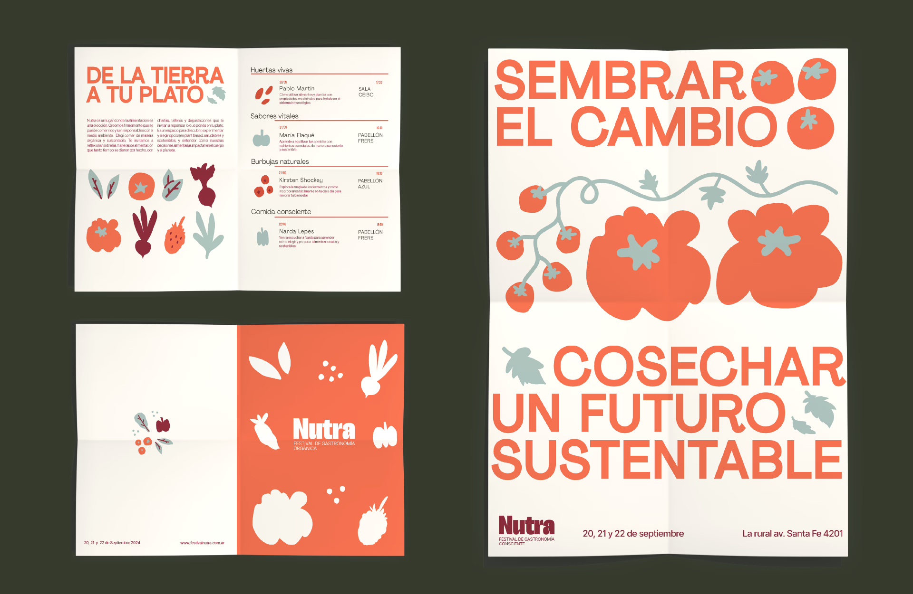
Identidad de Ciudad
Saint John's
Este proyecto académico consiste en el desarrollo de una identidad institucional para la ciudad de Saint John's, Canadá. El objetivo fue diseñar un sistema visual capaz de representar la identidad de la ciudad y responder a las necesidades de comunicación pública, promoción turística y vinculación con la comunidad.
Resumen del proyecto
Cliente
Proyecto Académico
Industria
Gobierno · Turismo · Identidad de Ciudad
Timeline
12 semanas (2025)
Rol
Brand Identity Designer · Diseño Editorial · Sistema Gráfico
Sobre el proyecto
Este proyecto académico consiste en el desarrollo de una identidad institucional para la ciudad de Saint John's, Canadá.
El objetivo fue diseñar un sistema visual capaz de representar la identidad de la ciudad y responder a las necesidades de comunicación pública, promoción turística y vinculación con la comunidad.
La propuesta parte de una investigación sobre el territorio, el clima, la historia y la cultura local para construir un lenguaje gráfico contemporáneo inspirado en los elementos más representativos de Saint John's, como sus horizontes, la niebla, el océano Atlántico y su patrimonio urbano.
Como resultado, se desarrolló un sistema de identidad flexible y escalable, aplicado a piezas editoriales, campañas turísticas, señalética, comunicación institucional y soportes urbanos, demostrando cómo una identidad visual puede fortalecer el posicionamiento de una ciudad y mejorar la experiencia de residentes y visitantes.
Solución de diseño
Solución de diseño
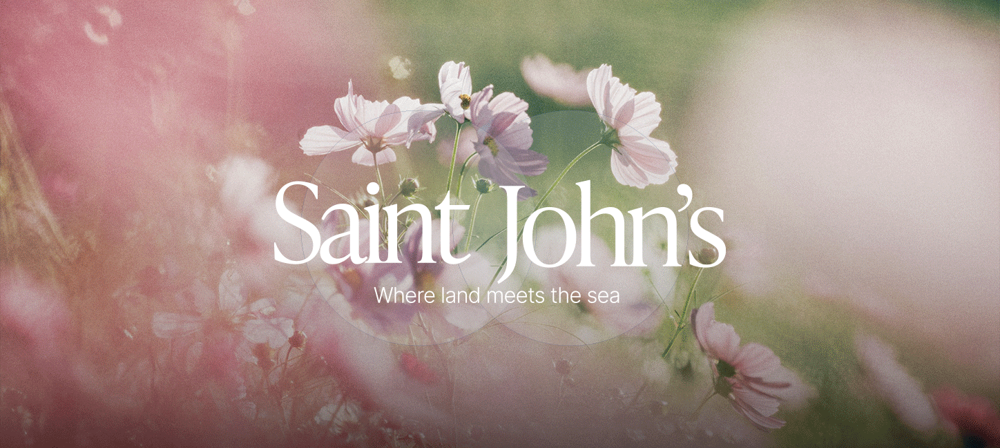
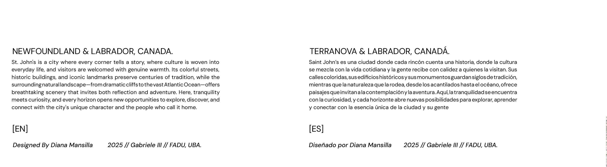
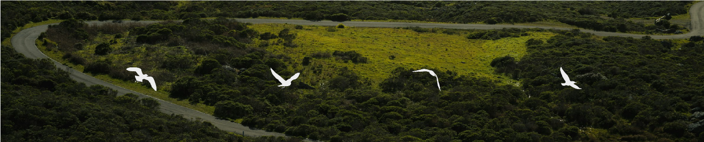
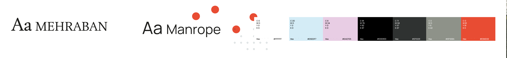
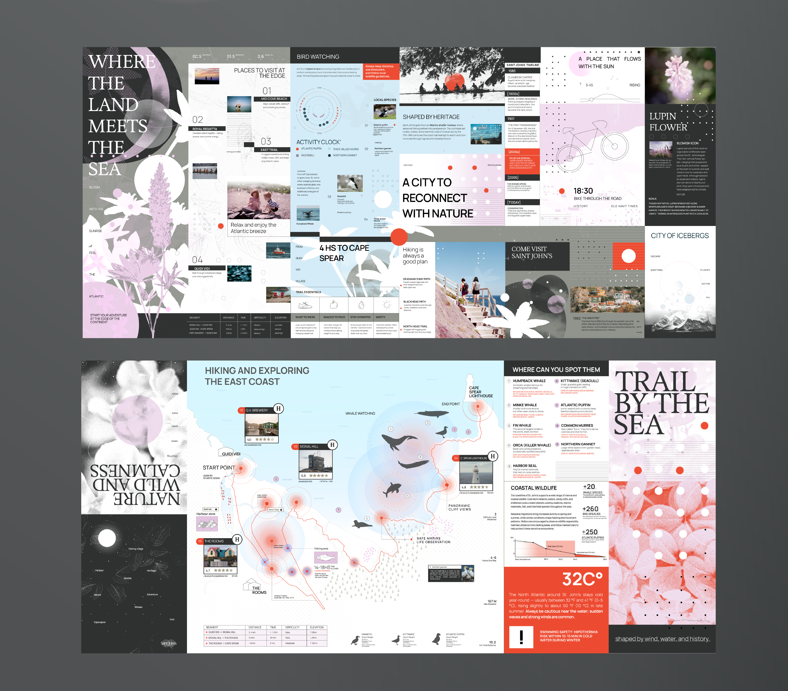
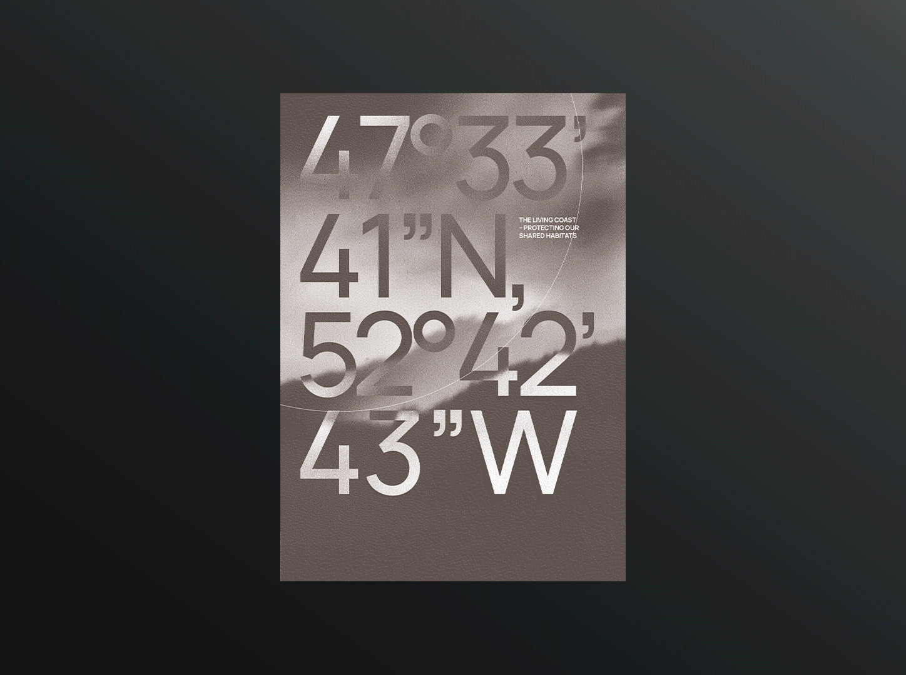
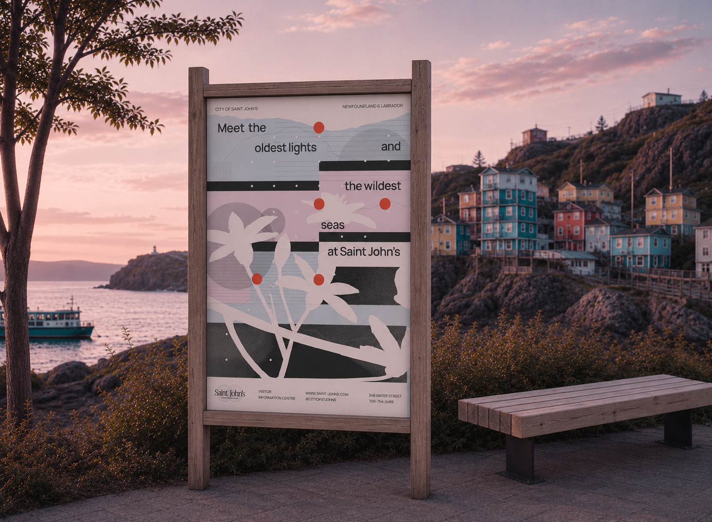
Sonido recomendado
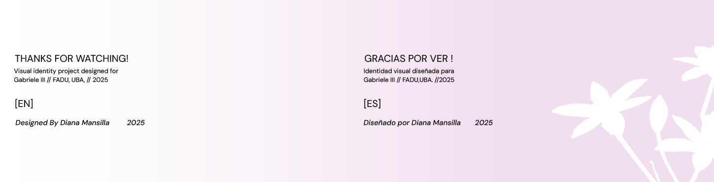
Motion & Video
Video AESA
Desarrollo de una pieza audiovisual para AESA destinada a exhibirse en el stand de la empresa durante una exposición. El objetivo fue captar la atención de los visitantes y comunicar la identidad, los valores y la propuesta de la marca mediante un lenguaje visual dinámico y contemporáneo.
Resumen del proyecto
Cliente
AESA
Industria
Energía · Comunicación audiovisual
Timeline
2 semanas (2024)
Rol
Motion Designer · Video Editor
Sobre el proyecto
Desarrollo de una pieza audiovisual para AESA destinada a exhibirse en el stand de la empresa durante una exposición.
El objetivo fue captar la atención de los visitantes y comunicar la identidad, los valores y la propuesta de la marca mediante un lenguaje visual dinámico y contemporáneo.
El proyecto abarcó la conceptualización, edición y animación del contenido, priorizando una narrativa clara, un ritmo visual atractivo y una identidad gráfica consistente. La pieza fue diseñada para funcionar en un entorno ferial, generando impacto visual, reforzando la presencia de la marca y acompañando la experiencia de los asistentes durante el evento.
Experimentos
Playground
Diseños experimentales y proyectos personales creados para explorar los límites del diseño en proyectos emergentes.